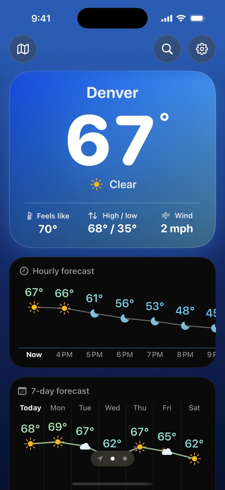
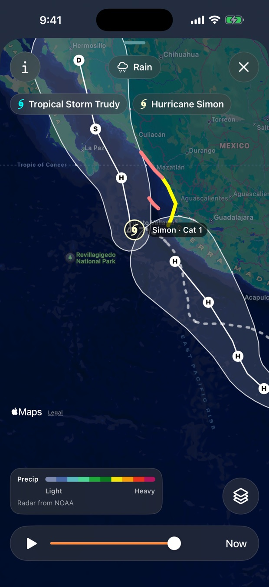
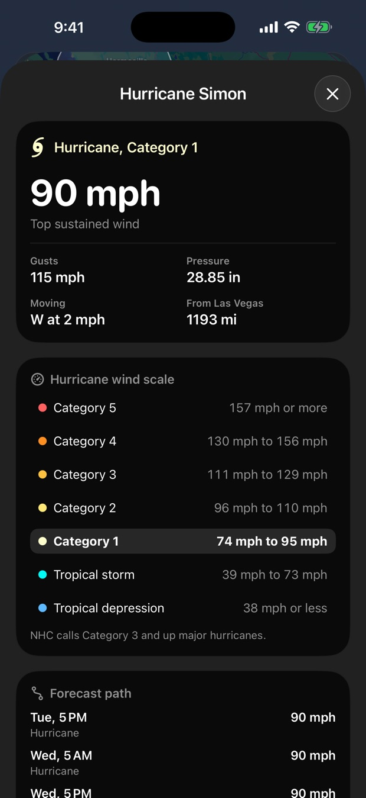
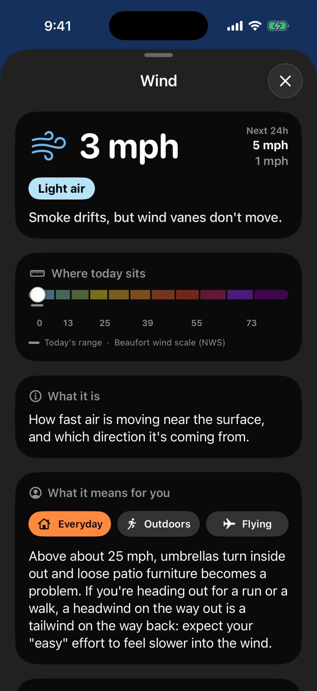
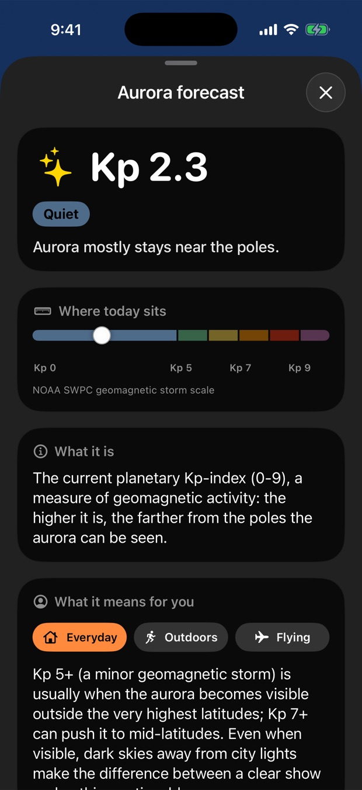

Weather for iPhone
The weather app that explains every reading.
A clean 24-hour and 7-day forecast, live radar, hurricane tracking, and nearly 50 readings to choose from, each with a plain-language guide: what it means, where today sits on its scale, and what it means for your day.
No ads, and no tracking in the app. Free to download, with a free forecast.

Everything you check the weather for.
A forecast you can read at a glance, built on Apple Weather and on official data from NOAA, the National Weather Service, NASA, and USGS.
Hourly and 7-day charts
The next 24 hours as a temperature line with rain chances, and the week as a high and low chart with each night's moon phase. Tap any day for its full details.
Next-hour rain
A minute-by-minute bar chart of the rain headed your way, so you know if it starts in 10 minutes or stops in 38.
Severe weather alerts
Official warnings with the full text and what to do, always free. When several are in effect, the most serious comes first and every one is a tap away.
Air quality and UV
The WHO UV index anywhere, and the US EPA air quality index across the US, from NOAA, with what each level means for your health.
How it really feels
Heat index and wind chill from the National Weather Service formulas, plus NWS HeatRisk, which flags dangerous heat across the US.
Make Today yours
Choose from nearly 50 cards, turn each one on or off, and drag them into your own order. The layout fills itself, so there are never empty gaps.
Here, Home, and everywhere else
Your current location, your Home, and your saved cities, each in its own place. Search any city and see its full forecast before you decide to save it.
Widgets for any place
Set each Home Screen and Lock Screen widget to where you are, your Home, or any saved city.
Every city on its own clock
Hours, sunrise, and tides show in each place's local time, wherever you are.
Live radar, satellite, and fronts.
Included with Premium
Watch the weather move, with maps straight from NOAA and NASA. Press play to see the last few hours unfold.
- Rain radar: live NOAA radar for the last 90 minutes, across the US, Alaska, Hawaii, Puerto Rico, and Guam
- Satellite: clouds anywhere in the world over the last 3 hours, from NASA and NOAA satellites
- Fronts: NOAA's national forecast chart, with cold and warm fronts, highs and lows, and where rain and snow are expected over the next three days
- Hurricanes: every active tropical storm drawn right on the map
- Color legends for every map, in your units

Track hurricanes as they happen.
Included with Premium
Every active hurricane and tropical storm in the Atlantic, Gulf of Mexico, Caribbean, and Eastern and Central Pacific appears on the map with its name and strength. Tap one for the latest from the National Hurricane Center.
- The forecast cone, track, and expected positions for the next 5 days
- Coastal hurricane and tropical storm watches and warnings, in their official colors
- Top winds, gusts, pressure, which way it's heading, and how far it is from you
- Where it sits on the Saffir-Simpson hurricane wind scale
- What the cone means, and what it doesn't, with the official advisory one tap away
- Updates on its own as each new advisory comes out
When a storm is within about 1,200 miles of your city, a Hurricanes card on Today shows it, free.

Learn what every number means.
Tap any reading to open a guide built for curious people. No meteorology degree needed.
- Where today sits: the real published scale, like the Beaufort wind scale or the WHO UV index, with a marker for right now
- What it feels like: "Small trees sway" beats "19 mph"
- What it means for you: advice for everyday life, running and hiking, or flying and drones
- Did you know: one surprising, sourced fact for every reading
- Where the data comes from: named on every page

Aurora, tides, and the sky above.
The specialist data other apps leave out, explained just as clearly.
- Aurora and space weather: the NOAA Kp index and how far south the northern lights may reach, plus solar wind and solar flares
- Tides and coast: next high and low tide, where the water is now, and coastal wind, pressure, and air temperature
- Aviation: flight category, METAR and TAF decoded, and live readings from the nearest airport
- Severe storm outlook for today and tomorrow, plus thunder chance
- Sun and moon: golden hour, daylight, phases, and moonrise

Go deeper than the forecast.
Official data from the agencies forecasters rely on, each card with its own plain-language guide. Most of it comes from US government sources, so it covers the US.
Waves, swell, and water
Wave height, swell, and water temperature from the nearest NOAA buoy, plus tidal currents.
River levels and flood stages
The nearest river gauge, where the water is now, where it's forecast to go, and how close it is to flooding.
Recent earthquakes
Magnitude 2.5 and up within about 155 miles over the past week, from the US Geological Survey, anywhere in the world.
Forecaster's notes
Your local National Weather Service office's own explanation of what they expect and why, section by section.
Weeks ahead and risky days
NOAA's 6 to 10 and 8 to 14 day outlooks, flood rain risk for the next three days, and winter storm impact.
Snow and sunshine
Snow level, snow on the ground, and how many hours of sunshine to expect today.
More insight. Better value.
Start free. Upgrade once, and get every insight Solrise has. No tiers, no add-ons, no ads. Subscribe monthly or yearly, or own it for life and never pay again.
Free
- Current conditions, hourly and 7-day forecasts
- Next-hour rain
- Severe weather alerts
- UV, wind, humidity, air quality, and more
- Heat index, wind chill, and HeatRisk
- A Hurricanes card when a storm is near
- What every reading means, its scale, and a fact
- Your location plus 2 cities
- Small Home Screen widget
Premium monthly
Everything in Premium. Cancel anytime.
Premium yearly
7 days free, then about $1.25 a month. Save 50% vs monthly.
- Everything in Free
- Live radar, worldwide satellite, and fronts
- Hurricane tracking with cones, tracks, and warnings
- Full guides: 24-hour charts, what's next, everyday, outdoors, and flying advice
- Aurora, space weather, tides, ocean, aviation, and storm outlooks
- River levels, earthquakes, forecaster's notes, and long-range outlooks
- Medium, large, and Lock Screen widgets
- Unlimited cities
Premium lifetime
Everything in Premium. Pay once, keep it for good. No subscription.
Subscriptions renew automatically until cancelled in your Apple ID settings. Cancel at least 24 hours before a renewal or the end of the trial to avoid being charged. Have a promo code? Redeem it in the app under Settings. See our Terms of Use and Privacy Policy.
How we compare
US App Store prices, checked October 2026. Each app offers different features, so compare what matters to you.
| App | Monthly | Yearly | Lifetime |
|---|---|---|---|
| Solrise Weather | $2.49 | $14.99 | $34.99 |
| Mercury Weather | $2.99 | $14.99 | $59.99 |
| Hello Weather | $1.99 | $19.99 | $99.99 |
What you get
Forecasts, live radar, hurricane tracking, alerts, air quality, UV, aurora, tides, ocean conditions, aviation reports, and a plain-language guide to every reading. Data from Apple Weather, NOAA, the National Weather Service, NASA, and USGS, named in the app.
Not yet, honestly
An Apple Watch app and rain notifications aren't built yet. When they arrive, they're included in Premium at no extra cost.
Weather, explained.
Free guides to the numbers on your forecast, from the same plain-language library inside the app.
What is dew point?
Why dew point, not humidity, tells you how muggy it will really feel.
UV index explained
The WHO UV index from Low to Extreme, and when you actually need sunscreen.
What does a 40% chance of rain mean?
What the percentage really measures, and what it doesn't.
Kp index and the aurora
What Kp 5, 7, and 9 mean, and how far south the northern lights can reach.
Questions
Is Solrise free?
Yes. The forecast, alerts, the small widget, and every core reading are free, with no ads. Premium adds live radar and maps, hurricane tracking, full guides, aurora, tides, ocean conditions, aviation, and unlimited cities.
Where does the weather data come from?
Forecasts, current conditions, and alerts come from Apple Weather. Radar, air quality, hurricanes, tides, ocean conditions, aviation reports, aurora, and outlooks come from NOAA and the National Weather Service, satellite imagery from NASA and NOAA, and earthquakes from the US Geological Survey. Every page in the app names its source.
Does Solrise work outside the US?
Yes. The forecast, current conditions, UV, and every core reading come from Apple Weather and work worldwide, and so do satellite clouds, aurora, and earthquakes. Rain radar and many of the specialist readings come from US government agencies, so they cover the US. Cards without data for your area stay out of your way, and the radar says when a map doesn't cover it.
Which hurricanes does Solrise track?
Every storm the National Hurricane Center tracks: hurricanes, tropical storms, and tropical depressions in the Atlantic, Gulf of Mexico, Caribbean, and Eastern and Central Pacific. They appear on the radar map automatically while they're active.
Is there a lifetime option?
Yes. $34.99 once unlocks Premium for good, with no subscription. Prefer flexibility? Premium is also $2.49 a month.
What do you do with my location?
Only fetch weather for it. It stays on your iPhone and is never sold. See our privacy policy.